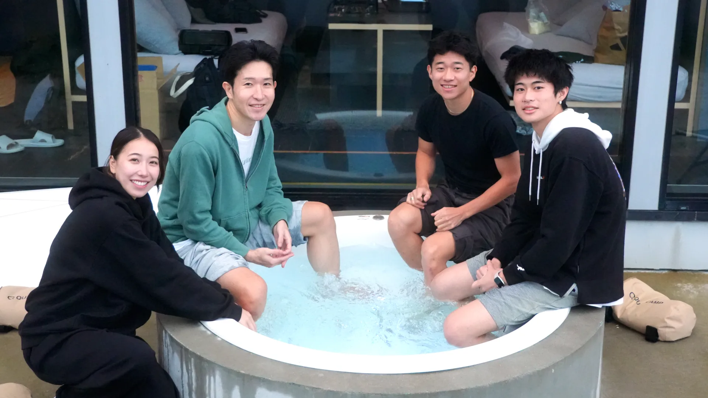
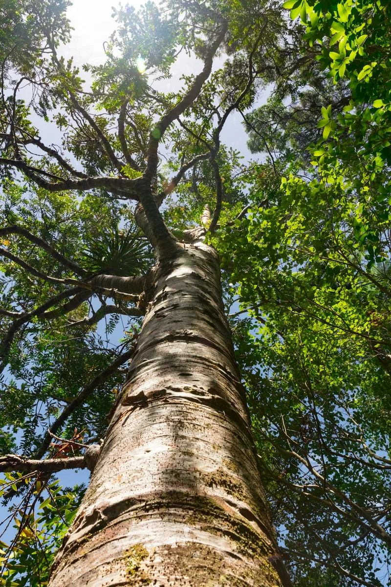
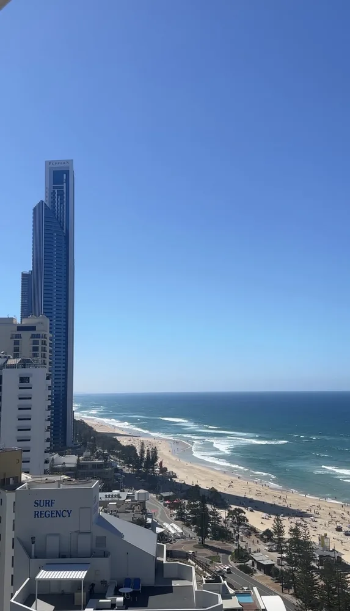
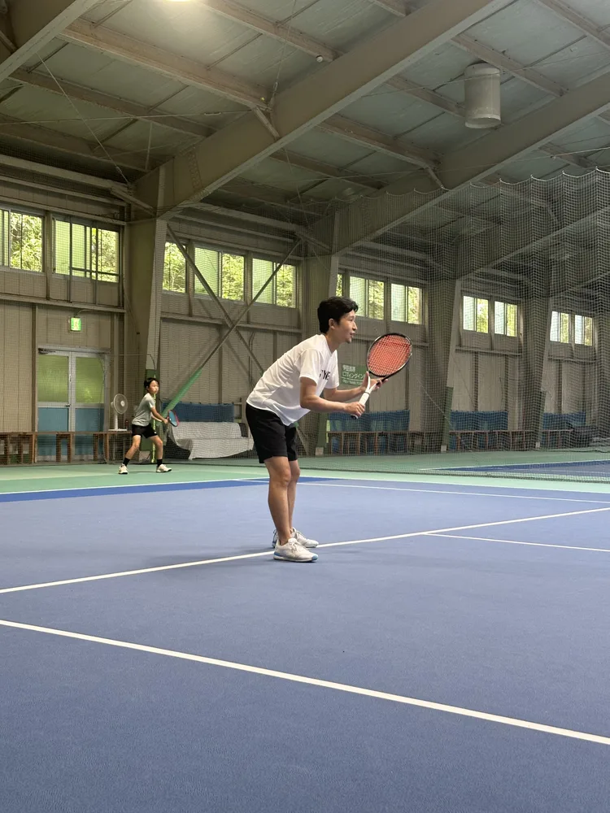
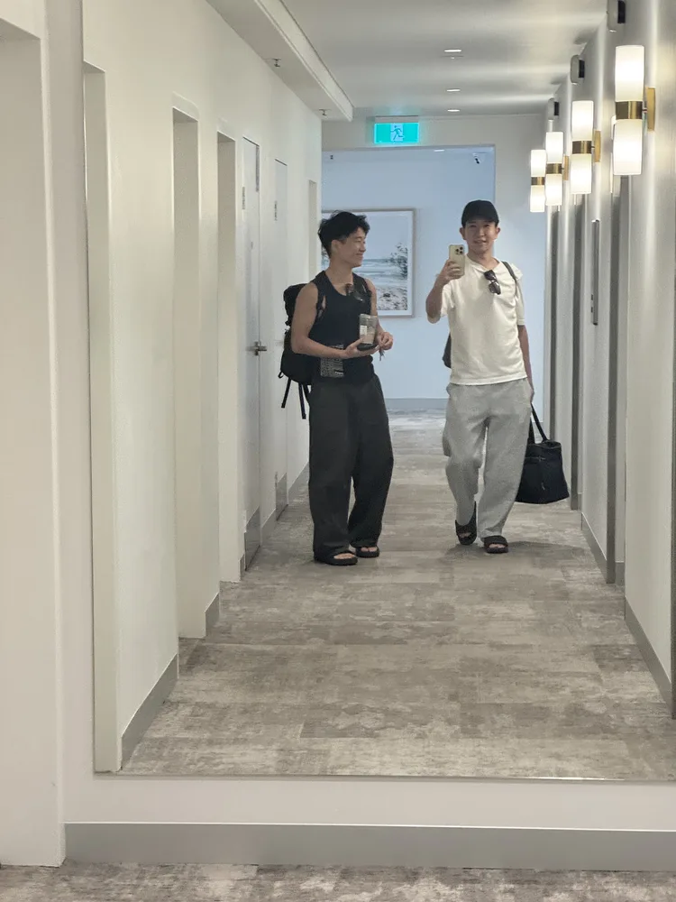
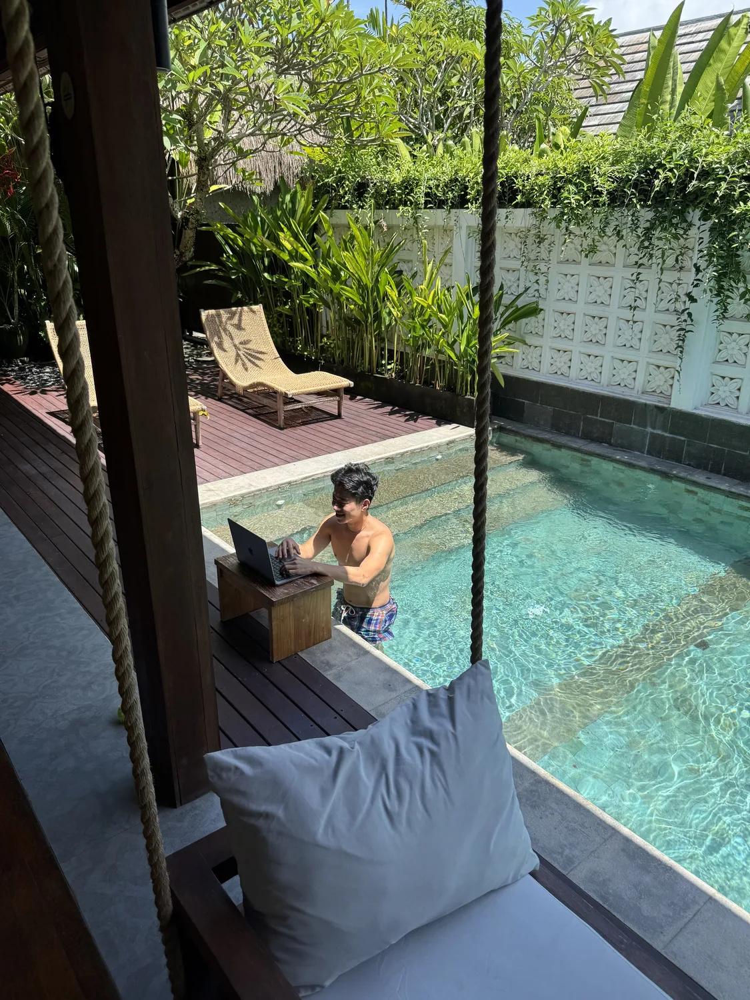
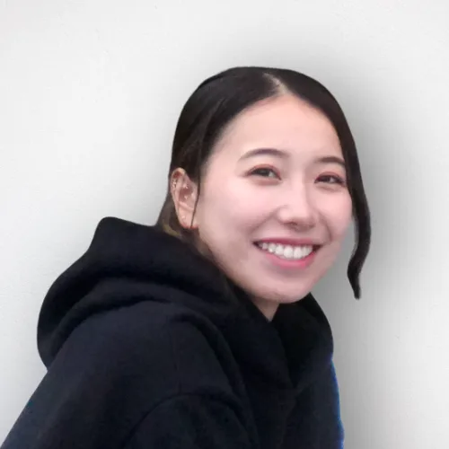
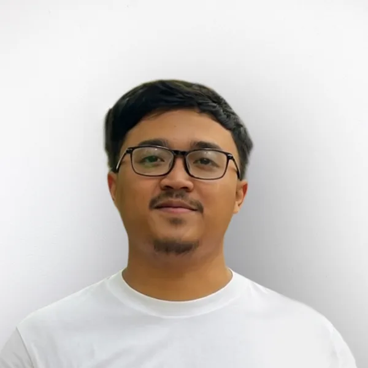

Keiji Hashimoto
CEO
大手通信会社の
大手から
既存の
事業展開と

大切にする価値観
会社の
労働の
会社の


行動指針
世界一楽しく
各自の
年齢や
チーム内では
全体









The significance of working joyfully

今後、
その
「パイ
チームに求める人間像
会社の
主体性を
常識にとらわれず、
CEO
大手通信会社の

PM/Art Director
東京生まれ、

Human Resource
愛知生まれ、
サムライスタイルでは

Project Manager
福岡在住。

Engineer Manager
インドネシア生まれ、

Engineer
インドネシア出身。

Engineer
インドネシア出身。